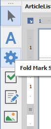

Custom Controls für DevExpress
Um nicht nativ unterstützte Funktionalitäten anbieten zu können, wurden einige Custom Controls geschaffen. Diese sind im Designer wie alle anderen Controls auch über die Toolbox erreichbar:

FoldMarks
Um Falzlinien darstellen zu können, wurde das FoldMarks-Control geschaffen. Dieses ist unter dem Namen "Fold Mark Settings" in der Toolbox zu erreichen.
Auf der Report-Oberfläche nimmt das control die Form einer grauen Box an:

Hierbei handelt es sich lediglich um einen Placeholder, um das Control leichter greifbar zu machen. Die Box wird beim Druck nicht erscheinen.
Einstellungen
Das Control bringt einige Properties mit, welche das Vorhandensein und Aussehen der Falzmarken bestimmen.
- Din Norm: Bestimmt, welche Art Falzmarken angedruckt werden. Zur Verfügung stehen Falzmarken nach Formen A und B der Din-Norm für Briefe.
- Visible: Definiert, ob die Falzmarken angedruckt werden. Das Settings-Control wird nie gedruckt.
- Mark Size: Bestimmt die Größe der Falzmarken. Sie werden als Rechteck gedruckt; definiert werden also erst Breite und dann Höhe.
- Orientation: Ob die Marken links oder rechts gedruckt werden sollen.
- Padding: Bestimmt den Abstand der Marken vom Rand.
- ForeColor/BackColor: Bestimmt die Farbe der Marken.
- HalfHeightMark: Bestimmt, ob eine zusätzliche Marke an der Randmitte des Blattes angedruckt werden soll.
- HalfHeightMarkForeColor/HalfHeightMarkBackColor: Bestimmt die Farbe der zusätzlichen Marke.
- HalfHeightMarkSize: Bestimmt die Größe der zusätzlichen Marke.
Subreports
Die standardmäßigen DevExpress-Reports bildeten einen Hybrid unserer Use cases, aber erfüllten keinen dieser vollständig.
Aus diesem Grund schufen wir zwei Subreport Custom Controls, welche nur zu zweit alle benötigten Fälle abdecken; dafür aber auf sie spezialisiert sind.
Embedded
Ein Embedded Subreport sollte genutzt werden, wenn ein DetailReportBand keine Option ist (z.B. für eine Iterierung über eine separate Datenquelle im Reportkopf).
Er wird vollständig in den Hauptreport eingebettet und auch mit ihm zusammen gespeichert. Beim Druck werden die beiden Reports als ein gemeinsamer, größerer Report behandelt.
Im WinForms-Designer lässt er sich über einen Doppelklick auf das Control neu anlegen oder editieren. Siehe Designer Customizations für Details bezüglich der Funktionsweise des Speichervorgangs von Embedded Subreports im WinForms-Designer.
Linked
Linked Subreports verfolgen den Zweck der "klasischen" Subreports als externe Report-Teile, die über verschiedene Reports hinweg wiederverwendbar sind.
Um sie zu nutzen, muss über den Smart Tag des Reports ein bestehender Report ausgewählt werden.

Nach der Auswahl wird die Url des selektierten Reports automatisch auf Höhe des Report-Verzeichnisses relativiert. Dies garantiert, dass der Subreport zum Druckzeitpunkt auf Basis des aktuellen Verzeichnisses seinen Ziel-Report selektiert und auswählt.
Nur die Url wird im Hauptreport gespeichert, also müssen Subreports innerhalb anderer Reports nach einer Änderung am Subreport nicht manuell aktualisiert werden.
Im Designer öffnet ein Doppelklick auf einen Linked Subreport diesen zwar, Änderungen werden allerdings nicht auf dessen tatsächliche source file zurückübertragen.
Um einen globalen Subreport zu editieren, muss genau dieser in einer vollwertigen FSReportDesigner-Instanz editiert werden.